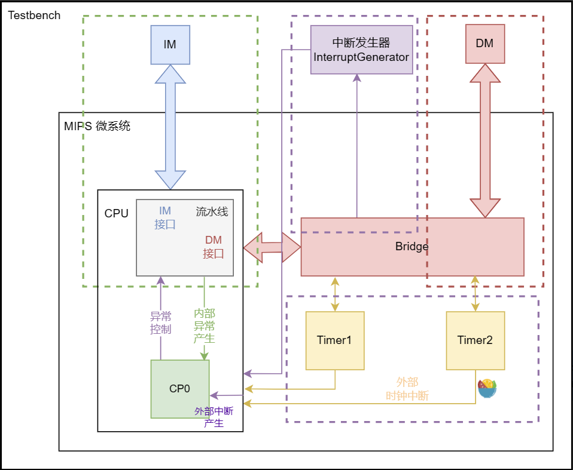
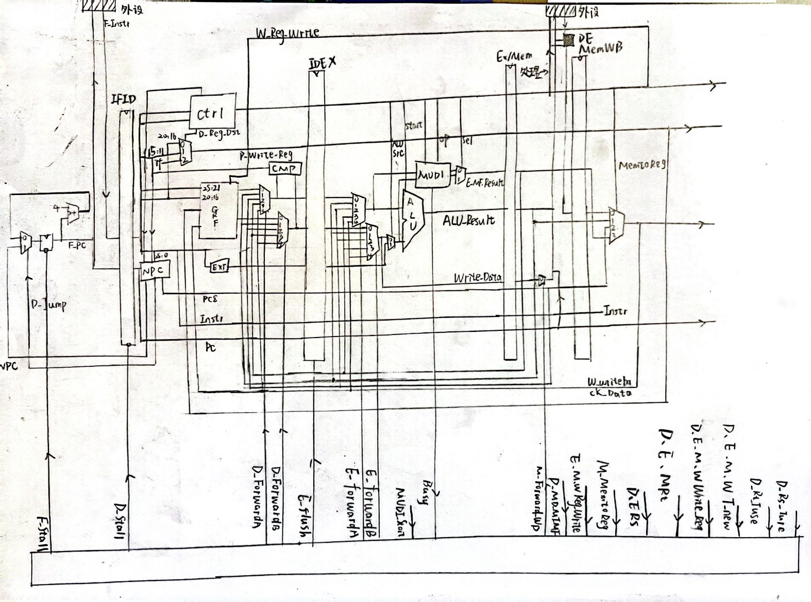
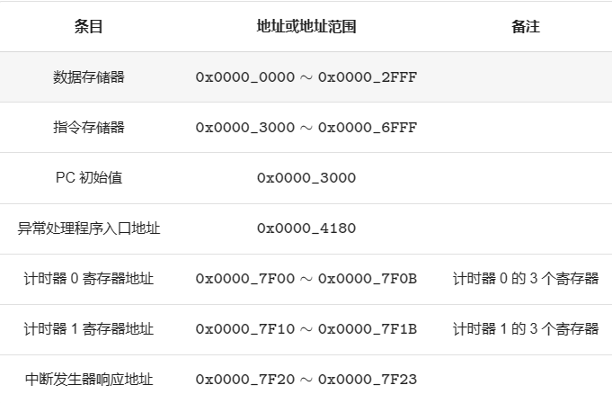
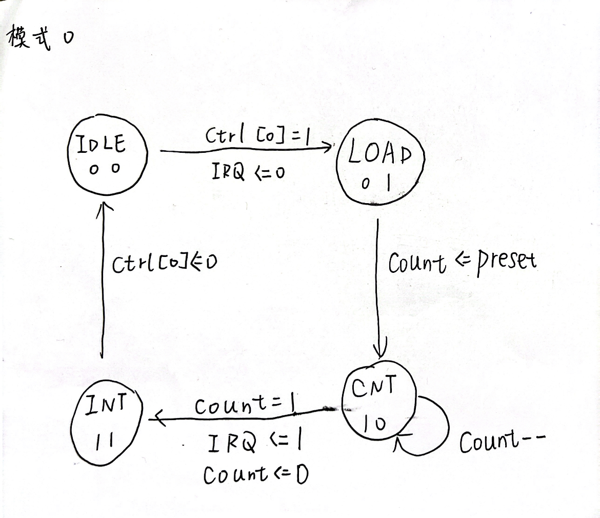
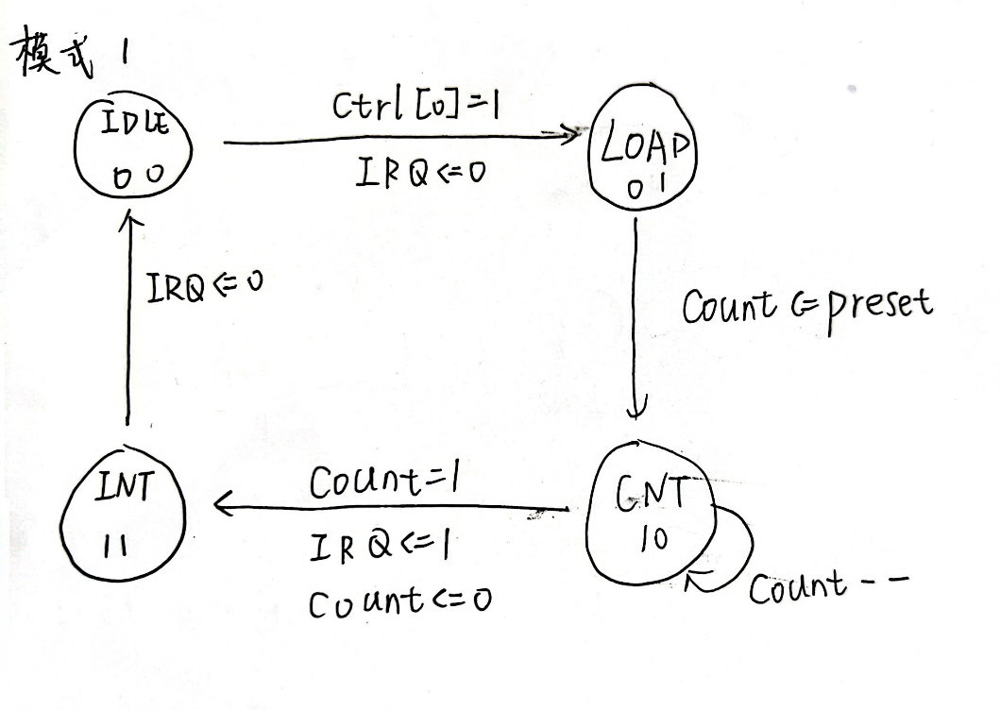

BUAA_CO_P7设计文稿
P7CPU设计文稿
1.总体架构

任务清单
新增指令：mfc0, mtc0, eret, syscall
P7 与之前的 project 相比，涉及的内容较多，所以在实现的时候很容易手忙脚乱，这里列出完成 P7 需要的事宜：
| 任务 | 解释 |
|---|---|
| 计时器 | 课程组提供实现代码，只需要结合代码和文档理解应用即可。 |
| 系统桥 | 为 CPU 提供统一的访问外设的接口，需要按规格自行实现。 |
| 协处理器 CP0 | 设置 CPU 的异常处理功能，反馈 CPU 的异常信息，需要按规格自行实现。 |
| 内部异常检测与流水 | CPU 需要具有可以检测内部指令执行错误的能力。 |
| 外部中断响应 | CPU 需要具有初步响应外部中断信号的能力。 |
| 异常处理指令 | 在异常处理程序中，会有一些特殊的指令需要实现。 |
| 单周期 CPU 的封装 | 让 CPU 从外部看上去是一个单周期 CPU。 |
| 异常处理程序 | 利用 MARS 编写简单的异常处理程序用于测试。 |

2.具体实现
1.CP0
将CP0置于M级，故宏观PC为M级对于PC
CP0 的端口声明如下：
| 端口 | 方向 | 位数 | 解释 |
|---|---|---|---|
| clk | I | 1 | 时钟信号。 |
| reset | I | 1 | 复位信号。 |
| en | I | 1 | 写使能信号。 |
| CP0Addr | I | 5 | 寄存器地址。 |
| CP0In | I | 32 | CP0 写入数据。 |
| CP0Out | O | 32 | CP0 读出数据。 |
| VPC | I | 32 | 受害 PC。 |
| BDIn | I | 1 | 是否是延迟槽指令。 |
| ExcCodeIn | I | 5 | 记录异常类型。 |
| HWInt | I | 6 | 输入中断信号。 |
| EXLClr | I | 1 | 用来复位 EXL。 |
| EPCOut | O | 32 | EPC 的值。 |
| Req | O | 1 | 进入处理程序请求。 |
CP0位置确定
2.约定
- 如果发生异常的指令是延迟槽指令，那么返回程序时仍然返回这条指令所属的跳转指令。也就是说“异常延迟槽回到跳转”。
- 如果发生异常的指令是跳转指令，那么我们要求执行完延迟槽。
- 如果发生异常的指令是乘除指令的下一条，乘除指令不被撤回。也就是对于 M错误指令，W乘除指令 的情况，此时乘除槽正在计算，本来在异常处理时可能会覆盖乘除槽的结果，但是我们约定不会这么做。但是注意，如果是 E乘除指令，M错误指令，你要保证乘除指令不执行。
范围约定

3.中断异常
中断异常约束
异常入口：《SMRL》的表 5.1 中定义了 MIPS 的异常入口，但考虑到简化设计以及与 MARS 保持一致，我们只支持 0x4180 一个入口地址，所有异常与中断都将从这里进入。
嵌套中断异常：本实验不要求支持中断异常嵌套的情况。
优先级：中断优先级高于异常优先级，即当有异常提交至 CP0 寄存器时，若有中断发生，则硬件应先响应中断，并重新执行受害指令及其后续指令；若没有中断发生，则处理异常。
精确异常：
除下面的情况外，对所有中断异常的处理都应遵循精确异常的处理规则。
在进入中断或异常状态时，如果受害指令及其后续指令
已经改变
了 MDU 的状态，则无需恢复。假设 CP0 在 M 级，MDU 在 E 级，考虑以下情况：
mult在 E 级启动了乘法运算，流水到 M 级时产生了中断，此时无需停止乘法计算，其它乘除法指令同理。mthi在 E 级修改了 HI 寄存器，流水到 M 级时产生了中断，此时无需恢复 HI 寄存器的值，mtlo同理。mult在 E 级，受害指令在 M 级，此时还未改变 MDU 状态，不应开始乘法计算，其它乘除法指令同理。mthi在 E 级，受害指令在 M 级，此时还未改变 MDU 状态，不应修改 HI 寄存器的值，mtlo同理。
中断规范：
- Timer0 输出的中断信号接入 HWInt[0] (最低中断位)，Timer1 输出的中断信号接入 HWInt[1]，来自中断发生器的中断信号接入 HWInt[2]。
- 规定中断产生时的受害指令为宏观 PC 对应的指令，此时应将宏观 PC 写入 EPC。
MIPS 微系统需要支持的异常：
| ExcCode | 助记符 | 描述 |
| :——— | :——— | :———————————————————————- |
| 0 | Int | 中断。 |
| 4 | AdEL | 取数或取指时地址错误。 |
| 5 | AdES | 存数时地址错误。 |
| 8 | Syscall | 系统调用。 |
| 10 | RI | 不认识的（或者非法的）指令码。 |
| 12 | Ov | 自陷形式的整数算术指令（例如add）导致的溢出。 |
| 异常与中断码 | 助记符与名称 | 指令与指令类型 | 描述 |
|---|---|---|---|
| 0 | Int （外部中断） |
所有指令 | 中断请求，来源于计时器与外部中断。 |
| 4 | AdEL （取指异常） |
所有指令 | PC 地址未字对齐。 |
PC 地址超过 0x3000 ~ 0x6ffc。 |
|||
AdEL （取数异常） |
lw |
取数地址未与 4 字节对齐。 | |
lh |
取数地址未与 2 字节对齐。 | ||
lh, lb |
取 Timer 寄存器的值。 | ||
| load 型指令 | 计算地址时加法溢出。 | ||
| load 型指令 | 取数地址超出 DM、Timer0、Timer1、中断发生器的范围。 | ||
| 5 | AdES （存数异常） |
sw |
存数地址未 4 字节对齐。 |
sh |
存数地址未 2 字节对齐。 | ||
sh, sb |
存 Timer 寄存器的值。 | ||
| store 型指令 | 计算地址加法溢出。 | ||
| store 型指令 | 向计时器的 Count 寄存器存值。 | ||
| store 型指令 | 存数地址超出 DM、Timer0、Timer1、中断发生器的范围。 | ||
| 8 | Syscall （系统调用） |
syscall |
系统调用。 |
| 10 | RI（未知指令） |
未知的指令码。 | |
| 12 | Ov（溢出异常） |
add, addi, sub |
算术溢出。 |
4.eret指令
eret 将保存在 CP0 的 EPC 寄存器中的现场(被中断指令的下一条地址)写入 PC，从而实现从中断、 异常或指令执行错误的处理程序中返回
3.思考题
1.问题
1、请查阅相关资料，说明鼠标和键盘的输入信号是如何被 CPU 知晓的？
2、请思考为什么我们的 CPU 处理中断异常必须是已经指定好的地址？如果你的 CPU 支持用户自定义入口地址，即处理中断异常的程序由用户提供，其还能提供我们所希望的功能吗？如果可以，请说明这样可能会出现什么问题？否则举例说明。（假设用户提供的中断处理程序合法）
3、为何与外设通信需要 Bridge？
4、请阅读官方提供的定时器源代码，阐述两种中断模式的异同，并分别针对每一种模式绘制状态移图。
5、倘若中断信号流入的时候，在检测宏观 PC 的一级如果是一条空泡（你的 CPU 该级所有信息均为空）指令，此时会发生什么问题？在此例基础上请思考：在 P7 中，清空流水线产生的空泡指令应该保留原指令的哪些信息？
6、为什么 jalr 指令为什么不能写成 jalr $31, $31？
2.答案
鼠标和键盘的输入信号是通过它们的接口（例如 USB）发送给计算机的主板。主板上的输入/输出控制器会将这些信号转换成数字信号，然后发送给中央处理器（CPU）。CPU会解析这些信号并根据用户的操作来执行相应的指令。IO设备的输入输出有好几种方式，键盘、鼠标这类的低速设备是通过中断请求的方式进行IO操作的。即当键盘上按下一个按键的时候，键盘会发出一个中断信号，中断信号经过中断控制器传到CPU，然后CPU根据不同的中断号执行不同的中断响应程序，然后进行相应的IO操作，把按下的按键编码读到寄存器（或者鼠标的操作），最后放入内存中。
保证设计的统一性，即通过协议保证接口更加兼容。用户使用自定义处理可能出现不兼容的问题
正如教程所说，系统桥是连接 CPU 和外设的功能设备，它会给 CPU 提供一种接口，使得 CPU 可以像读写普通存储器一样（即按地址读写）来读写复杂多变的外设，不用管数据是从哪来，怎么来，只用发挥CPU本身功能就可以。系统桥统一且简化了 CPU 的对外接口，CPU 不必为每种外设单独提供接口，符合高内聚，低耦合的设计思想。
模式0通常用于产生定时中断 ,当计数器倒计数为 0 后，计数器停止计数，Ctrl 寄存器的计数使能自动变为 0，并且中断信号始终保持有效，直到屏蔽中断或重新开始计数。

模式1当计数器倒计数为 0 后， 初值寄存器值被自动加载至计数器， 计数器继续倒计数。模式 1 通常用于产生周期性脉冲

会导致宏观PC突然为0或者为x。在清空流水线的时候，应该保留PC信息。
PC <- GPR[rs]和GPR[rd] <- PC + 4的进行顺序未知，存在二义